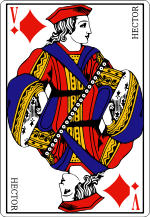
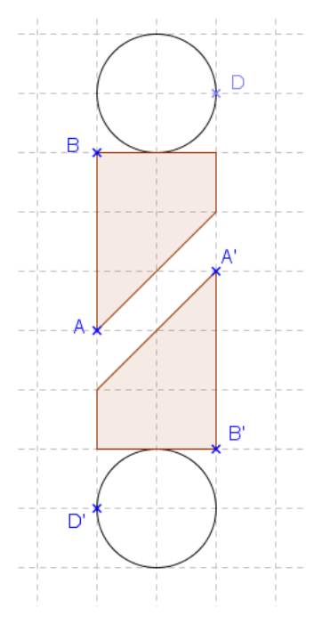
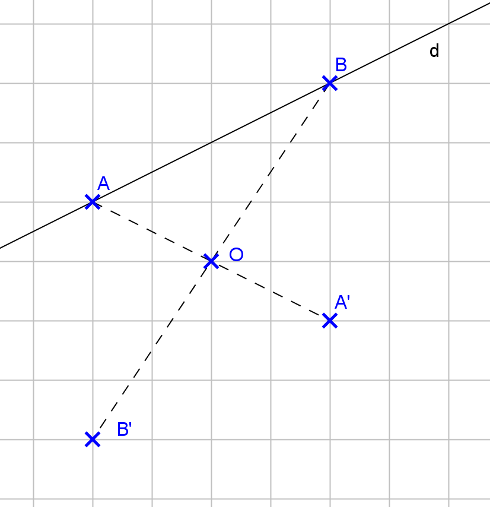

1) Peut-on superposer le corps et la tête par pliage ?
2) Retourne la carte comme indiqué par les flèches (tu peux aussi utiliser le bouton ci-dessus). Que remarques-tu ?
Voici un schéma simplifié représentant la carte ci-dessus. Les points D et D' représentent le nez des personnages, les points B et B' une épaule et les points A et A' le bas de la manche.

3) Construis le point O, milieu du segment [AA'].
4) Construis les milieux des segments [BB'] et [DD']. Que constates-tu ?
5) Pointe ton compas sur le point O et fais tourner la feuille d'un demi-tour. Que se passe-t-il ?

Étape 1 : au stylo rouge, décalque la droite d, les points A, B et O sur la feuille de papier calque.
1) Que représente le point O pour les segments [AA'] et [BB'] ?
2) a) Décalque la droite d, les points A et B ainsi que le point O sur une feuille de papier calque.
b) Fixe la feuille de papier calque en la piquant avec la pointe du compas sur le point O.
Fais pivoter la feuille de papier calque d'un demi-tour autour du point O.
Que remarques-tu ?
3) Complète les phrases suivantes :
On remarque que :
On dit que le point A' est le symétrique de A par rapport au point O.
On dit que le segment [A'B'] est le symétrique du segment [AB] par rapport au point O.
On dit que la droite (A'B') est la symétrique de la droite (AB) par rapport au point O.